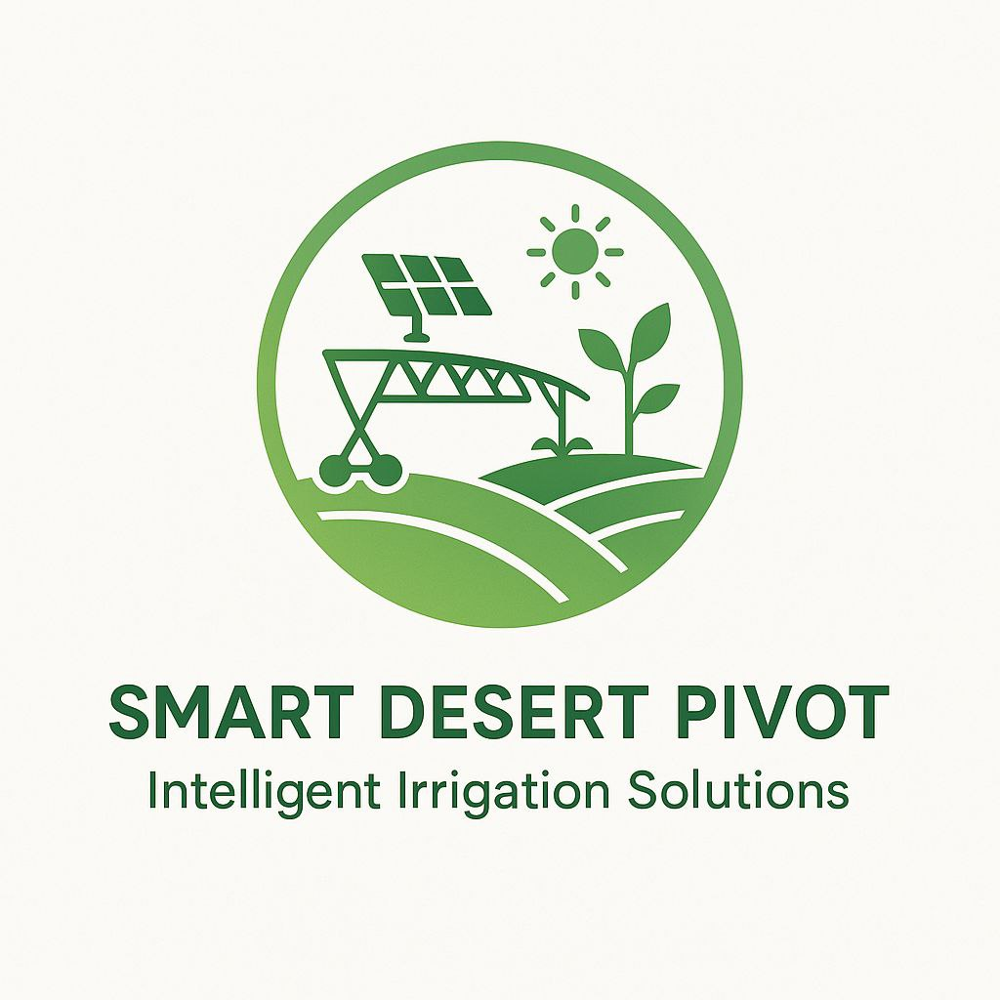

07
OFFICIAL ACCREDITATION & FOUNDER • الهوية الرسمية والاعتماد الوزاري
مشروع مبتكر معتمد رسمياً من الدولة الجزائرية برقم 09072522272
يتمتع مشروع Smart Desert Pivot (SDP) بالاعتراف القانوني والمؤسساتي الكامل من اللجنة الوطنية لمنح علامات المؤسسات الناشئة والمشاريع المبتكرة وحاضنات الأعمال بوزارة اقتصاد المعرفة والمؤسسات الناشئة والمؤسسات المصغرة:

نسخة طبق الأصل من شهادة علامة "مشروع مبتكر" الممنوحة للمؤسس لشهب جعفر بتاريخ 09 جويلية 2025.
LEGAL CREDENTIALS • البيانات القانونية الرسمية
- اسم المشروع المعتمد: نظام الري المحوري الذكي للمناطق الصحراوية والجافة (Smart Desert Pivot)
- صاحب المشروع والمؤسس: م. لشهب جعفر (Lecheheb Djaafar)
- رقم شهادة علامة مشروع مبتكر: 09072522272
- تاريخ الإصدار والصلاحية: 09 جويلية 2025 (صالحة لمدة سنتين وقابلة للتجديد والترقية لوسم Startup)
- المرجع التنظيمي: المرسوم التنفيذي 20-254 والقرار الوزاري المشترك 1275/008
- الهيئة الحاضنة: حاضنة أعمال جامعة قاصدي مرباح — ورقلة، الجزائر
FOUNDER PROFILE • نبذة عن المؤسس

م. لشهب جعفر (Lecheheb Djaafar)
خريج ماستر إعلام آلي وأنظمة ذكية • جامعة قاصدي مرباح ورقلة
قاد تصميم وبناء النموذج الأولي للمحور الذكي والحصول على العلامة الوزارية في جويلية 2025، وبعد إتمام واجب الخدمة الوطنية، يقود اليوم مرحلة التصنيع الميداني (2026–2027) لتوطين تكنولوجيا الري المحوري الذكي في ولايات الجنوب الجزائري.